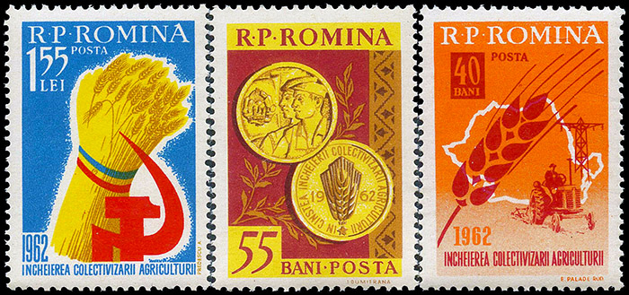

Below I show several stamps from the Five Year Plan set, issued by the Romanian Popular Republic in 1952. The Plan started actually in 1951 and it failed, like many other similar plans started in other communist countries. Other two stamps of the Five Year Plan set of 1952 are also quite interesting. The red 3 Lei value show an armed soldier and is labeled: "The army of the R.P.R. (Romanian Popular Republic) defends our peaceful work." One can ask what has it to do with a Five year plan, but if you will read below about the forced collectivization, you will understand the real role of the army. On the dark green 30 Lei stamp one can read: "In the 5 years there will be afforested 32 times more than in 1940." Normally one could expect that equal periods of time are taken in a comparison, because only one year could be less representative.
 |
 |
 |
But not all of communist actions failed, unfortunately. For example on the green 7 Lei stamp (above, the first on the row) one can read: "In 1955 the socialist sector will prevail in the agriculture." The communist party officials, using the forces of the Securitate (Secret Police) and of the army, have imposed to the majority of farmers to join the so called "collective farm".
The Collectivization of Agriculture
The stamp issued in 1956 and labeled "5 years from the founding of collective farms, 1951 - 1956" is one of the most interesting in the Romanian post - W.W.II philately. It was issued the July 23, 1956 and was withdrawn after a few days.
On October 18, 1956 it was replaced by a new stamp, marked "7 years of collective farms, 1949 - 1956". We show below a CTO where on the cancel can be read the year 1957. "5 ANI" on the first stamps means "5 years", and on the second one "7 ANI" means "7 years". The first was a huge mistake, that escaped the designer and the persons responsible (with their heads) for the correct labeling of stamps, strictly surveyed by the communist party and Securitate authorities. And nevertheless their propaganda blunders were printed and distributed!
On April 27, 1962 the Romanian P.A. issued a set of three stamps celebrating the full collectivization of the agriculture.
